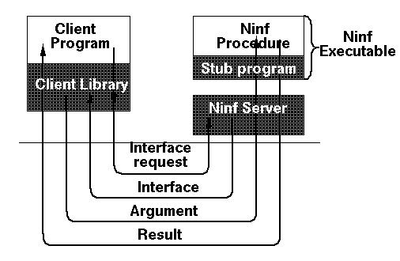

 <center> <H1> Ninf RPC </H1> </center> <hr noshade width = 80% algn = "center"> <H2>


<OL>
<LI> インターフェイス情報のリクエスト<br> (クライアント -> サーバ) <p>
<LI> インターフェイス情報 <br>(サーバ -> クライアント)
<pre>
[mode-in  int, 
 mode-in  double[][],
 mode-in  double[][], 
 mode-out double[][]]
</pre>
<LI> 引数<br> (クライアント -> サーバ) <p>
<LI> 結果<br> (サーバ -> クライアント) <p>
</OL>
 <hr> <center><table><td><h2>　　　　　　　　　　　　　　　</td><td></td><td></td><td><h2><em>　　　　　　　HOKKE' 96 </td></table></center>


